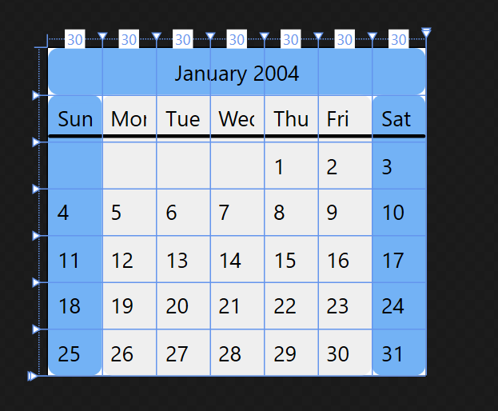

Создание сложной сетки
В этом примере показано, как использовать Grid управления для создания макета, который выглядит как календарь.
Пример
В следующем примере определяется восемь строк и восемь столбцов с помощью RowDefinition и ColumnDefinition классы. Она использует Grid.ColumnSpan и Grid.RowSpan присоединенных свойств, вместе с Rectangle элементы, которые заполняют фон различных столбцов и строк. Такой подход возможен, так как может существовать несколько элементов в каждой ячейке Grid, принципиальное различие между Grid и Table.
В примере используется вертикальные градиенты к Fill столбцы и строки, чтобы улучшить визуальное представление и удобочитаемость календаря. Стиль TextBlock элементы представляют даты и дней недели. TextBlock элементов абсолютного располагаются в пределах их ячеек с помощью Margin свойства и свойства выравнивания, которые определены в стиле для приложения.
<Page xmlns="http://schemas.microsoft.com/winfx/2006/xaml/presentation"
xmlns:x="http://schemas.microsoft.com/winfx/2006/xaml"
WindowTitle="Complex Grid Example">
<Border BorderBrush="Black">
<Grid ShowGridLines="false" Background="White">
<Grid.Resources>
<Style TargetType="{x:Type ColumnDefinition}">
<Setter Property="Width" Value="30"/>
</Style>
<Style TargetType="{x:Type Rectangle}">
<Setter Property="RadiusX" Value="6"/>
<Setter Property="RadiusY" Value="6"/>
</Style>
<Style x:Key="DayOfWeek">
<Setter Property="Grid.Row" Value="1"></Setter>
<Setter Property="TextBlock.Margin" Value="5"></Setter>
</Style>
<Style x:Key="OneDate">
<Setter Property="TextBlock.Margin" Value="5"></Setter>
</Style>
</Grid.Resources>
<Grid.ColumnDefinitions>
<ColumnDefinition/>
<ColumnDefinition/>
<ColumnDefinition/>
<ColumnDefinition/>
<ColumnDefinition/>
<ColumnDefinition/>
<ColumnDefinition/>
<!-- This column will receive all remaining width -->
<ColumnDefinition Width="*"/>
</Grid.ColumnDefinitions>
<Grid.RowDefinitions>
<RowDefinition Height="Auto"/>
<RowDefinition Height="Auto"/>
<RowDefinition Height="Auto"/>
<RowDefinition Height="Auto"/>
<RowDefinition Height="Auto"/>
<RowDefinition Height="Auto"/>
<RowDefinition Height="Auto"/>
<!-- This row will receive all remaining Height -->
<RowDefinition/>
</Grid.RowDefinitions>
<!-- These Rectangles constitute the backgrounds of the various Rows and Columns -->
<Rectangle Grid.ColumnSpan="7" Fill="#73B2F5"/>
<Rectangle Grid.Row="1" Grid.RowSpan="6" Fill="#73B2F5"/>
<Rectangle Grid.Column="6" Grid.Row="1" Grid.RowSpan="6" Fill="#73B2F5"/>
<Rectangle Grid.Column="1" Grid.Row="1" Grid.ColumnSpan="5" Grid.RowSpan="6"
Fill="#efefef"/>
<!-- Month row -->
<TextBlock Grid.ColumnSpan="7" Margin="0,5,0,5" HorizontalAlignment="Center">
January 2004
</TextBlock>
<!-- Draws a separator under the days-of-the-week row -->
<Rectangle Grid.Row="1" Grid.ColumnSpan="7"
Fill="Black" RadiusX="1" RadiusY="1" Height="2" Margin="0,20,0,0"/>
<!-- Day-of-the-week row -->
<TextBlock Grid.Column="0" Style="{StaticResource DayOfWeek}">Sun</TextBlock>
<TextBlock Grid.Column="1" Style="{StaticResource DayOfWeek}">Mon</TextBlock>
<TextBlock Grid.Column="2" Style="{StaticResource DayOfWeek}">Tue</TextBlock>
<TextBlock Grid.Column="3" Style="{StaticResource DayOfWeek}">Wed</TextBlock>
<TextBlock Grid.Column="4" Style="{StaticResource DayOfWeek}">Thu</TextBlock>
<TextBlock Grid.Column="5" Style="{StaticResource DayOfWeek}">Fri</TextBlock>
<TextBlock Grid.Column="6" Style="{StaticResource DayOfWeek}">Sat</TextBlock>
<!-- Dates go here -->
<TextBlock Grid.Column="4" Grid.Row="2" Style="{StaticResource OneDate}">1</TextBlock>
<TextBlock Grid.Column="5" Grid.Row="2" Style="{StaticResource OneDate}">2</TextBlock>
<TextBlock Grid.Column="6" Grid.Row="2" Style="{StaticResource OneDate}">3</TextBlock>
<TextBlock Grid.Column="0" Grid.Row="3" Style="{StaticResource OneDate}">4</TextBlock>
<TextBlock Grid.Column="1" Grid.Row="3" Style="{StaticResource OneDate}">5</TextBlock>
<TextBlock Grid.Column="2" Grid.Row="3" Style="{StaticResource OneDate}">6</TextBlock>
<TextBlock Grid.Column="3" Grid.Row="3" Style="{StaticResource OneDate}">7</TextBlock>
<TextBlock Grid.Column="4" Grid.Row="3" Style="{StaticResource OneDate}">8</TextBlock>
<TextBlock Grid.Column="5" Grid.Row="3" Style="{StaticResource OneDate}">9</TextBlock>
<TextBlock Grid.Column="6" Grid.Row="3" Style="{StaticResource OneDate}">10</TextBlock>
<TextBlock Grid.Column="0" Grid.Row="4" Style="{StaticResource OneDate}">11</TextBlock>
<TextBlock Grid.Column="1" Grid.Row="4" Style="{StaticResource OneDate}">12</TextBlock>
<TextBlock Grid.Column="2" Grid.Row="4" Style="{StaticResource OneDate}">13</TextBlock>
<TextBlock Grid.Column="3" Grid.Row="4" Style="{StaticResource OneDate}">14</TextBlock>
<TextBlock Grid.Column="4" Grid.Row="4" Style="{StaticResource OneDate}">15</TextBlock>
<TextBlock Grid.Column="5" Grid.Row="4" Style="{StaticResource OneDate}">16</TextBlock>
<TextBlock Grid.Column="6" Grid.Row="4" Style="{StaticResource OneDate}">17</TextBlock>
<TextBlock Grid.Column="0" Grid.Row="5" Style="{StaticResource OneDate}">18</TextBlock>
<TextBlock Grid.Column="1" Grid.Row="5" Style="{StaticResource OneDate}">19</TextBlock>
<TextBlock Grid.Column="2" Grid.Row="5" Style="{StaticResource OneDate}">20</TextBlock>
<TextBlock Grid.Column="3" Grid.Row="5" Style="{StaticResource OneDate}">21</TextBlock>
<TextBlock Grid.Column="4" Grid.Row="5" Style="{StaticResource OneDate}">22</TextBlock>
<TextBlock Grid.Column="5" Grid.Row="5" Style="{StaticResource OneDate}">23</TextBlock>
<TextBlock Grid.Column="6" Grid.Row="5" Style="{StaticResource OneDate}">24</TextBlock>
<TextBlock Grid.Column="0" Grid.Row="6" Style="{StaticResource OneDate}">25</TextBlock>
<TextBlock Grid.Column="1" Grid.Row="6" Style="{StaticResource OneDate}">26</TextBlock>
<TextBlock Grid.Column="2" Grid.Row="6" Style="{StaticResource OneDate}">27</TextBlock>
<TextBlock Grid.Column="3" Grid.Row="6" Style="{StaticResource OneDate}">28</TextBlock>
<TextBlock Grid.Column="4" Grid.Row="6" Style="{StaticResource OneDate}">29</TextBlock>
<TextBlock Grid.Column="5" Grid.Row="6" Style="{StaticResource OneDate}">30</TextBlock>
<TextBlock Grid.Column="6" Grid.Row="6" Style="{StaticResource OneDate}">31</TextBlock>
</Grid>
</Border>
</Page>
На следующем рисунке показана полученный элемент управления, настраиваемые календаря:
